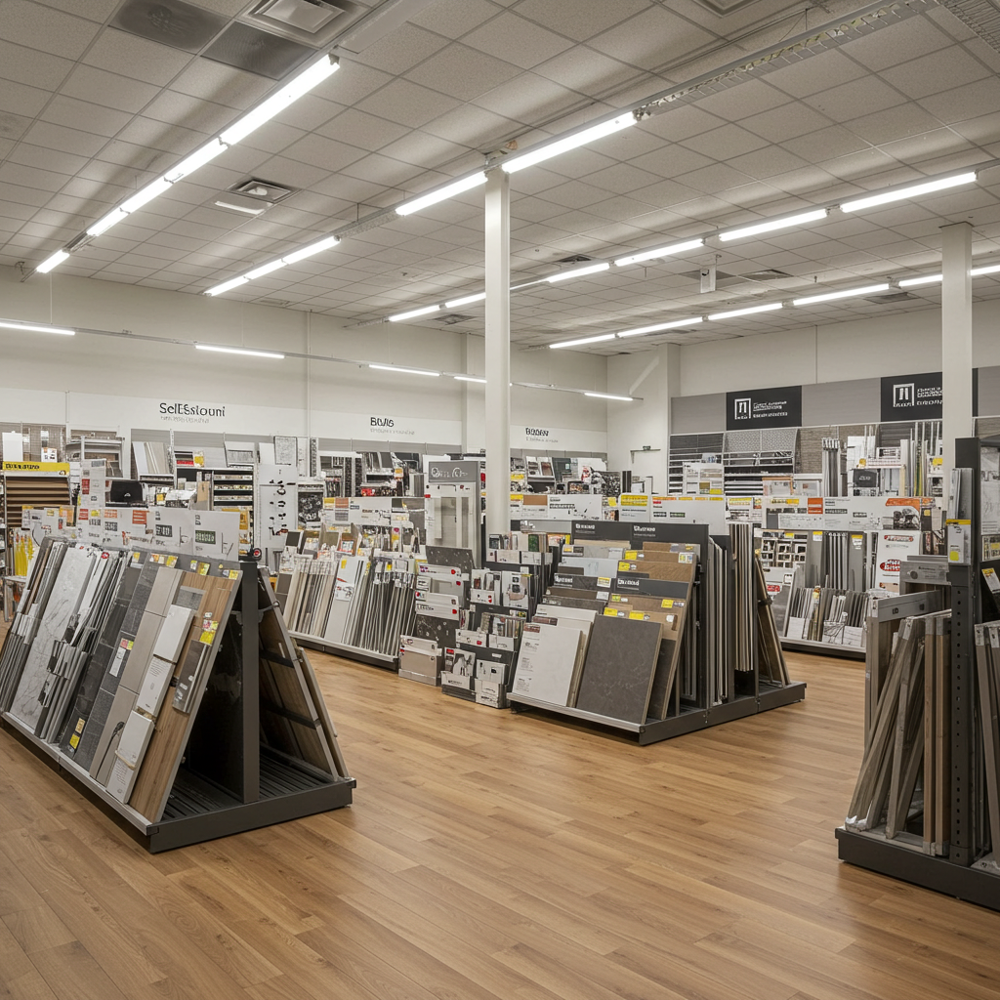
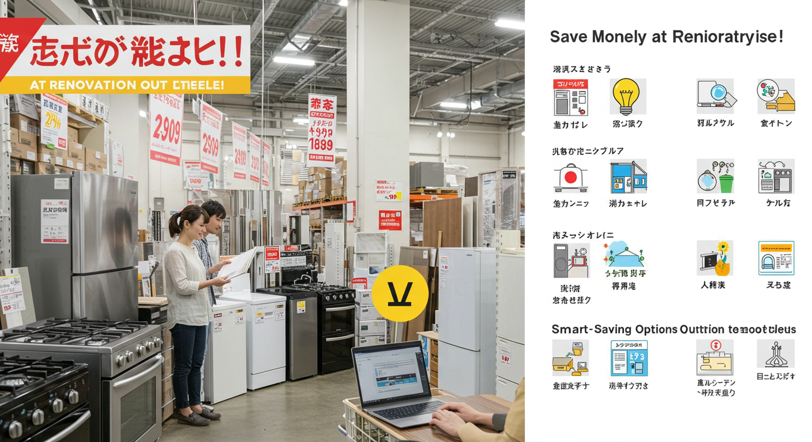
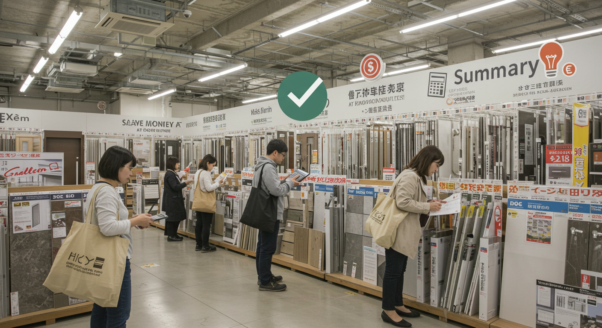

リフォームアウトレットで賢く費用を抑える！失敗しない選び方と注意点

導入

「そろそろ、この古くなったキッチンを新しくしたいな」「お風呂をもっと快適な空間にしたいけれど、費用が心配…」
住まいに関する夢や希望は尽きないものですが、リフォームを考え始めると、まず頭をよぎるのが「費用」の問題ではないでしょうか。理想の空間を思い描けば描くほど、見積もり金額は膨らんでいき、いつしか「もう少し我慢しようかな」と諦めかけてしまうこともあるかもしれません。
しかし、もし高品質な設備や建材を、驚くほど手頃な価格で手に入れる方法があるとしたら、いかがでしょうか。その夢、諦めるのはまだ早いかもしれません。その賢い選択肢こそが、今回ご紹介する「リフォームアウトレット」の活用です。
「アウトレット」と聞くと、洋服や雑貨を思い浮かべる方が多いかもしれませんが、実はリフォームの世界にも、お得なアウトレット品がたくさん存在します。型落ちになったけれど機能は最新モデルと遜色ないシステムキッチン、ショールームに展示されていた美しい洗面化粧台、少しだけ傷がついてしまったけれど使用には全く問題ないフローリング材など、様々な理由で正規の価格では販売されなくなった商品が、あなたとの出会いを待っているのです。
リフォームアウトレットは、ただ単に費用を抑えられるというだけではありません。通常なら予算オーバーで諦めていたかもしれない、ワンランク上のメーカーの製品や、デザイン性の高い商品を手にすることができるチャンスでもあります。それはまるで、宝探しのようなワクワクする体験です。
もちろん、アウトレット品にはメリットだけでなく、知っておくべき注意点やデメリットも存在します。商品の選択肢が限られていたり、保証内容が通常と異なったりすることもあります。だからこそ、正しい知識を身につけ、賢く選ぶことが何よりも大切になります。
この記事では、リフォームアウトレットの世界を初めて探検する方にも、安心して一歩を踏み出していただけるよう、その基礎知識から、メリット・デメリット、失敗しない選び方のコツ、そして実際にリフォームを進める際の流れまで、一つひとつ丁寧に、そして分かりやすく解説していきます。
リフォームは、決して安い買い物ではありません。だからこそ、賢く情報を集め、納得のいく選択をしていただきたい。この記事が、あなたの理想の住まいづくりを、より豊かで、より賢く、そして心から満足できるものにするための一助となれば幸いです。さあ、一緒にリフォームアウトレットの扉を開けて、賢いリフォーム計画を始めましょう。
リフォームアウトレットとは？基礎知識

リフォームを考え始めたとき、多くの方がインターネットやカタログで最新の設備や建材を調べることでしょう。そこには魅力的な商品が並んでいますが、同時に価格の高さに驚くことも少なくありません。そんな時にぜひ知っていただきたいのが「リフォームアウトレット」という選択肢です。まずは、その基本的な仕組みと魅力について、じっくりと見ていきましょう。
アウトレット品の種類と安さの理由
「アウトレット」と聞くと、「何か欠陥があるのでは？」「安かろう悪かろうなのでは？」といった不安を感じる方もいらっしゃるかもしれません。しかし、リフォームアウトレット品が安い理由は、商品の品質が劣っているからでは決してありません。そこには、メーカーや販売店の様々な「ワケ」が存在するのです。その理由を正しく理解すれば、不安なく、賢く商品を選ぶことができます。
主に、リフォームアウトレット品は以下のような種類に分けられます。
1. 型落ち品・旧モデル品
これがアウトレット品の最も代表的なものです。キッチンやお風呂、トイレなどの住宅設備は、家電製品と同じように、定期的にモデルチェンジが行われます。新しい機能が追加されたり、デザインが刷新されたりすると、それまでのモデルは「旧モデル」となります。しかし、考えてみてください。1年前に最新だったモデルが、新しいモデルが出たからといって、急に性能が劣るものでしょうか。多くの場合、基本的な性能や使い勝手は最新モデルとほとんど変わらないか、ほんの少しの違いしかないことがほとんどです。むしろ、長期間販売されていたモデルは、初期の不具合などが改善され、安定した品質が期待できるという側面もあります。メーカーや販売店は、新しいモデルを販売するために在庫スペースを確保したいという事情から、これらの旧モデル品をアウトレット品として、大幅に値下げして販売するのです。最新のデザインや機能に強いこだわりがなければ、これは非常にお得な選択肢と言えるでしょう。
2. 過剰在庫品・キャンセル品
メーカーが販売予測を立てて商品を生産したものの、予測よりも売れ行きが伸びずに在庫として残ってしまった「過剰在庫品」。また、新築やリフォームの契約が進んでいたものの、お客様の都合で急にキャンセルになってしまい、発注済みの商品が行き場を失ってしまった「キャンセル品」。これらもアウトレット市場に出てくることがあります。商品はもちろん新品で、何の問題もありません。ただ、倉庫に眠らせておくだけではコストがかかるため、少しでも早く販売したいというメーカーや業者の都合で、安く提供されるのです。色やサイズが特定のものに限られることが多いですが、もしご自身の希望とぴったり合えば、これ以上ない幸運な出会いとなるでしょう。
3. 展示品
リフォーム会社のショールームや、メーカーの展示場、住宅展示場のモデルハウスなどで、お客様に商品の魅力を見てもらうために設置されていた商品です。多くの人が実際に見て、触れて、機能を試しているため、新品ではありません。そのため、よく見ると細かな傷や汚れがついている場合があります。しかし、専門のスタッフが定期的に清掃やメンテナンスを行っているため、状態は非常に良好なものがほとんどです。実際に設置されていたものなので、使い勝手や空間との相性をイメージしやすいというメリットもあります。特に、システムキッチンやユニットバスなどの大型設備では、最新のハイグレードモデルが展示されていることも多く、通常では手の届かないような高級品を格安で手に入れる絶好のチャンスとなります。
4. 傷あり品（B級品）
製造過程や輸送・保管の際に、ごくわずかな傷や凹み、塗装のムラなどが生じてしまった商品です。メーカーの厳しい品質基準では「正規品」として出荷できないと判断されたものですが、その多くは、言われなければ気づかないような軽微なものです。例えば、キッチンの扉の目立たない部分に小さな擦り傷がある、洗面台のボウルの裏側にわずかな欠けがある、といった具合です。機能や耐久性には全く影響がないため、設置してしまえば気にならないという方にとっては、非常にお得な商品です。どこに傷があるのかを事前にしっかりと確認し、その場所と程度に納得できれば、賢い買い物になることは間違いありません。
このように、リフォームアウトレット品が安い理由は様々ですが、いずれも「品質が悪いから」ではないということがお分かりいただけたでしょうか。それぞれの商品の「ワケ」を理解し、ご自身の価値観やリフォームの目的に合わせて選ぶことが、満足のいくアウトレット活用への第一歩となるのです。
リフォームアウトレットの対象商品例
では、具体的にどのような商品がリフォームアウトレットとして手に入るのでしょうか。実は、私たちがリフォームで交換を考えるほとんどのものが、アウトレット品の対象となり得ます。ここでは、代表的な商品をいくつかご紹介しましょう。ご自身がリフォームを検討している場所を思い浮かべながら、読み進めてみてください。
1. システムキッチン
リフォームの中でも特に人気の高いシステムキッチンは、アウトレット品の宝庫とも言える場所です。メーカーのモデルチェンジが比較的頻繁に行われるため、高機能な型落ち品が市場に出回りやすいのが特徴です。例えば、自動水栓や食器洗い乾燥機、IHクッキングヒーターといった人気の設備が搭載されたモデルが、驚くような価格で手に入ることもあります。
また、ショールームの展示品も狙い目です。最新のトレンドを取り入れたデザイン性の高いキッチンや、高級感のある人造大理石のカウンタートップ、収納力抜群のキャビネットなどを備えたハイグレードなモデルが、アウトレットとして販売されることがあります。ただし、展示品はサイズが決まっているため、ご自宅のキッチンスペースにぴったり収まるかどうかの確認が不可欠です。
2. ユニットバス・システムバス
一日の疲れを癒すお風呂も、アウトレット品を活用することで、より快適な空間へと生まれ変わらせることができます。保温性の高い浴槽、乾きやすい床材、節水効果のあるシャワーなど、近年のユニットバスは機能性が大幅に向上しています。こうした機能を備えた旧モデル品や、ショールームの展示品がアウトレットとして出てくることがあります。
特に展示品の場合、浴室暖房乾燥機やミストサウナ、ジェットバスといったオプション機能がフル装備されていることも珍しくありません。これらのオプションを新品で追加すると費用は一気に跳ね上がりますが、展示品であれば、標準的なモデルの新品価格と変わらない、あるいはそれ以下の価格で手に入れられる可能性があります。
3. トイレ
トイレもまた、アウトレット品が見つかりやすい住宅設備の一つです。節水機能や温水洗浄便座、自動開閉・自動洗浄機能など、今やトイレは非常に高機能になっています。各メーカーが競って新製品を開発するため、型落ち品が比較的短いサイクルで発生します。機能的には最新モデルとほとんど変わらないのに、価格は数万円も安くなるケースも少なくありません。
また、タンクレストイレやデザイン性の高い手洗い器付きのトイレなど、空間をおしゃれに演出する製品もアウトレットで見つけることができます。トイレは比較的コンパクトな設備なので、キャンセル品などが出た場合にも、多くの住宅で設置しやすいというメリットがあります。
4. 洗面化粧台
洗面化粧台は、デザインや収納力、サイズなどバリエーションが非常に豊富です。そのため、過剰在庫品やキャンセル品が出やすい傾向にあります。三面鏡の裏がすべて収納になっているタイプや、掃除がしやすい一体型のカウンターボウル、タッチレス水栓が付いたモデルなど、希望に合ったものがアウトレットで見つかるかもしれません。
特に、横幅（間口）のサイズがご自宅の洗面スペースと合致すれば、非常にお得に交換が可能です。事前にご自宅の洗面台のサイズを正確に測っておくことが、良い出会いにつながる鍵となります。
5. 給湯器
急な故障で交換が必要になることも多い給湯器ですが、アウトレット品を探してみるという選択肢もあります。エコジョーズなどの高効率給湯器も、モデルチェンジのタイミングで旧モデルが安く販売されることがあります。性能に大きな差がない場合も多いので、急な出費を少しでも抑えたい場合には、リフォーム会社やガス会社にアウトレット品の在庫がないか問い合わせてみる価値は十分にあります。
6. 内装材（フローリング、壁紙、タイルなど）
フローリングや壁紙（クロス）、タイルといった内装材も、アウトレット品が見つかります。これらは、特定の品番が廃番になった際の残りの在庫や、大規模な工事で余った材料などが主な供給源です。
例えば、「この部屋だけアクセントクロスを貼りたい」「玄関の床だけタイルにしたい」といった部分的なリフォームであれば、必要な量が限られているため、アウトレットの在庫で十分に賄える可能性があります。無垢材のフローリングやデザイン性の高い輸入タイルなど、通常は高価でためらってしまうような素材も、アウトレットなら挑戦しやすいかもしれません。ただし、広い面積に施工する場合は、在庫が足りるかどうかを必ず確認する必要があります。
このように、リフォームアウトレットの対象商品は多岐にわたります。水回りの主要な設備から内装材まで、様々な掘り出し物が見つかる可能性があります。大切なのは、どのような商品がなぜ安くなっているのかを理解し、ご自身の希望と照らし合わせながら、じっくりと探していくことです。
リフォームアウトレットのメリット
リフォームアウトレットを活用することには、多くの魅力的なメリットがあります。単に「安い」という一言では片付けられない、その奥深い利点を理解することで、リフォーム計画はより楽しく、そして賢いものになるはずです。ここでは、リフォームアウトレットがもたらす3つの大きなメリットについて、詳しくご紹介していきます。
メリット１．大幅なコスト削減で費用を抑えられる
リフォームアウトレット最大のメリットは、何と言ってもその価格の安さにあります。新品の正規品と比較して、30%オフや50%オフは当たり前、時には70%～80%オフといった、驚くような価格で販売されていることも少なくありません。これは、リフォーム全体の費用を劇的に圧縮できる可能性を秘めています。
具体的に考えてみましょう。例えば、定価100万円のシステムキッチンをリフォームで導入しようと計画していたとします。通常、リフォーム会社を通じて購入する場合でも、ある程度の割引はありますが、それでも70万円～80万円程度の費用がかかるのが一般的です。これに加えて、解体・設置工事費や諸経費が必要になります。
ここで、リフォームアウトレットを活用したケースを想像してみてください。もし、同じグレードの型落ち品や展示品が、50%オフの50万円で見つかったとしたらどうでしょうか。これだけで、設備費用を20万円～30万円も節約することができます。この浮いた予算の使い道は無限大です。
一つは、リフォーム全体の質を向上させるために使うことです。例えば、キッチンで浮いた20万円を使って、古くなっていたお風呂の給湯器を最新の高効率タイプに交換する、あるいは、リビングの壁紙を一面だけデザイン性の高いものに張り替えて部屋の雰囲気を一新する、といったことが可能になります。当初の予算内では諦めていた「もう一つのリフォーム」が実現できるかもしれません。
また、同じキッチンのリフォーム内でも、グレードアップに使うことができます。浮いた予算で、オプションの食器洗い乾燥機を追加したり、掃除が楽になるレンジフードに変更したり、収納力を高めるためのカップボードを設置したりと、より快適で便利なキッチン空間を作り上げることができます。
もちろん、単純に全体の費用を抑えて、家計の負担を軽くするという選択も非常に賢明です。リフォーム後には、新しい家具や家電、インテリア雑貨なども揃えたくなるものです。節約できた分をそうした費用に充てることで、トータルでの満足度を高めることができるでしょう。
特に、キッチン、お風呂、トイレ、洗面台といった水回りの設備は、リフォーム費用の中でも大きな割合を占めます。これらの主要な設備をアウトレット品で揃えることができれば、そのコスト削減効果は絶大です。数十万円単位での節約も決して夢物語ではありません。
このように、リフォームアウトレットは、単に初期費用を安くするだけでなく、リフォーム計画全体の自由度を高め、より満足度の高い結果へと導いてくれる強力な味方なのです。賢く活用することで、限られた予算の中で最大限の夢を叶える。それが、リフォームアウトレットが持つ最大の魅力と言えるでしょう。
メリット２．高品質な商品を低価格で手に入れるチャンス
「予算は限られているけれど、せっかくリフォームするなら、できるだけ品質の良いもの、デザイン性の高いものを選びたい」。これは、リフォームを考える誰もが抱く願いではないでしょうか。リフォームアウトレットは、そんな願いを叶えてくれる魔法のような選択肢となり得ます。
通常のリフォームでは、予算に応じて選べる商品のグレードがある程度決まってしまいます。例えば、システムキッチンであれば、基本的な機能を備えた「スタンダードグレード」、デザイン性や収納力が向上する「ミドルグレード」、そして最新機能や高級素材を使った「ハイグレード」といったように、価格帯によって明確なランク分けがされています。予算が100万円であれば、選べるのはスタンダードグレードか、頑張ってミドルグレードの一部、というのが現実です。憧れのハイグレードキッチンは、カタログを眺めるだけで諦めざるを得ない、というケースも少なくありません。
しかし、リフォームアウトレットの世界では、この常識が覆ることがあります。先ほども触れたように、アウトレット品にはショールームの展示品や、モデルチェンジによる型落ち品が含まれます。特にショールームでは、お客様に商品の魅力を最大限に伝えるため、各メーカーが最上位のハイグレードモデルを展示することが一般的です。
想像してみてください。美しい人造大理石のワークトップ、触れるだけで水が出るタッチレス水栓、油汚れが簡単に落ちる最新のレンジフード、そして大容量の収納を備えた、定価であれば200万円以上するような憧れのキッチン。それが、展示品として入れ替えられるタイミングで、半額以下の100万円以下で販売されていたとしたらどうでしょうか。当初の予算内で、諦めていたはずの最高品質のキッチンが、現実のものとなるのです。
これはキッチンに限りません。肩湯や打たせ湯といったリラクゼーション機能が付いたユニットバス、ホテルのようなデザインの洗面化粧台、デザイン性の高いタンクレストイレなど、普段なら「素敵だけど、うちには贅沢すぎるかな」と感じてしまうような商品こそ、アウトレットで出会える可能性を秘めています。
「型落ち品」と聞くと、性能が劣るイメージを持つかもしれませんが、これも大きな誤解です。住宅設備の技術革新は、数年単位で緩やかに行われることが多く、1～2年前のモデルであれば、最新モデルと比べて基本的な性能にほとんど差がないケースがほとんどです。むしろ、使い勝手や耐久性といった面では、市場で評価が定まった安定したモデルであるとも言えます。デザインが少し違う、あるいは最新のニッチな機能が一つ付いていない、という程度の違いで価格が大幅に下がるのであれば、それは非常に賢い選択と言えるでしょう。
リフォームアウトレットを活用することは、単なる節約術ではありません。それは、ご自身の予算という制約の中で、品質やデザインに妥協することなく、理想の住まいを追求するための「戦略的な選択」なのです。同じ予算でも、ワンランク、ツーランク上の満足感を得られる。この「価格以上の価値」を手に入れられることこそ、リフォームアウトレットの大きな魅力の一つです。
メリット３．掘り出し物に出会える楽しみがある
決まったカタログの中から商品を選ぶ通常のリフォームとは異なり、リフォームアウトレットには「一期一会」の出会いの楽しみがあります。それはまるで、宝探しやアンティークショップ巡りのような、ワクワクする体験です。
アウトレット品は、その性質上、在庫が常に変動します。今日お店にあった商品が、明日にはもうないかもしれません。逆に、昨日まではなかった魅力的な商品が、今日突然入荷していることもあります。この予測不能な偶然性が、アウトレット探しの醍醐味と言えるでしょう。
例えば、リフォーム会社の倉庫の片隅に、キャンセル品となった個性的なデザインの輸入タイルが眠っているかもしれません。メーカーのオンラインアウトレットサイトを覗いてみたら、たった今、探していたサイズの洗面台が特別価格で出品されたところかもしれません。ふらりと立ち寄ったアウトレット専門店で、他では見かけないような、美しい木目のフローリング材に運命的な出会いを果たすこともあるでしょう。
こうした「掘り出し物」との出会いは、リフォーム計画に思わぬインスピレーションを与えてくれます。当初は考えてもいなかったようなデザインや色の設備に出会うことで、「こんな空間も素敵かもしれない」と、新しいアイデアが生まれるきっかけになるのです。
例えば、「キッチンは無難な白で」と考えていたけれど、アウトレットで深みのある美しい木目調のキッチンパネルに出会い、温かみのあるカフェのような空間を目指すことにした、というケース。あるいは、「シンプルな洗面台でいい」と思っていたけれど、ヨーロッパのホテルのような、デザイン性の高いベッセルボウルの洗面台が格安で手に入ることになり、洗面所を「見せる空間」としてコーディネートすることにした、というケース。
このように、アウトレット品との出会いをきっかけに、当初の計画が良い意味で裏切られ、より個性的で、より愛着のわく住まいが生まれることがあります。カタログから選ぶだけではたどり着けなかった、自分だけのオリジナルの空間づくり。それこそが、掘り出し物探しの最大の喜びです。
もちろん、この楽しみは、デメリットである「選択肢の少なさ」と表裏一体の関係にあります。特定の色やサイズ、機能に強いこだわりがある場合は、希望通りの商品にタイミングよく出会うのは難しいかもしれません。
しかし、もしあなたが「絶対にこの商品でなければダメ」という強いこだわりがないのであれば、ぜひこの宝探しを楽しんでみてください。「何か良いものはないかな？」という軽い気持ちで、定期的にアウトレットショップのウェブサイトをチェックしたり、リフォーム会社の担当者に「何か面白いアウトレット品、入っていませんか？」と尋ねてみたりする。そのプロセス自体が、リフォームの楽しい思い出の一つになるはずです。
効率や確実性だけを求めるのではなく、偶然の出会いを楽しみ、その出会いから生まれる新しい可能性を受け入れる。そんな柔軟な姿勢で臨むことで、リフォームアウトレットは、単なるコスト削減の手段を超えた、創造的で心豊かな住まいづくりのパートナーとなってくれるでしょう。
アウトレットのデメリットと注意点

ここまでリフォームアウトレットの魅力的なメリットについてお話ししてきましたが、物事には必ず光と影があります。賢く、そして後悔のない選択をするためには、そのデメリットや注意点を事前にしっかりと理解しておくことが不可欠です。ここでは、アウトレット品を選ぶ際に心に留めておくべき4つの重要なポイントについて、詳しく解説していきます。
デメリット１．商品の選択肢が限られる場合がある
リフォームアウトレットの最大のメリットが価格であるとすれば、最大のデメリットは「選択肢の限定性」にあると言えるでしょう。これは、アウトレット品の成り立ちを考えれば当然のことです。型落ち品、在庫品、展示品など、いずれも偶然発生した商品を販売しているため、新品のように色、サイズ、デザイン、機能などを自由自在に選ぶことはできません。
例えば、システムキッチンを交換しようと考えているとします。新品であれば、扉の色は何十種類ものカラーサンプルから好みのものを選べますし、ワークトップの素材や高さ、収納のタイプなども、自分の使い勝手や好みに合わせて自由にカスタマイズできます。
しかし、アウトレット品の場合、「デザインはとても気に入ったけれど、扉の色が理想と少し違う」「機能は申し分ないけれど、我が家のキッチンスペースには幅が10cm足りない（あるいは大きい）」「食洗機付きが絶対条件なのに、この商品には付いていない」といった状況が頻繁に起こり得ます。
特に、サイズの問題は深刻です。ユニットバスやシステムキッチンなどの大型設備は、設置スペースに数センチの余裕もないことが多く、サイズが合わなければ物理的に設置することができません。どんなに魅力的な商品であっても、自宅に収まらなければ意味がないのです。
また、色やデザインについても、「この壁紙に合わせたいから、洗面台は絶対にこの色がいい」といった強いこだわりがある場合、その希望に合致するアウトレット品にタイミングよく出会える確率は、決して高くはありません。
このデメリットを克服するための心構えは、「完璧を求めすぎない柔軟性」と「優先順位の明確化」です。
まず、「柔軟性」について。100%理想通りの商品を探すのではなく、「80%満足できれば上出来」くらいの気持ちで探してみましょう。例えば、扉の色が少しイメージと違っても、取っ手を自分好みのものに交換するだけで、全体の印象は大きく変わることがあります。機能が一つ足りなくても、その分、価格が大幅に安いのであれば、他の部分でカバーできないか考えてみる。そうした柔軟な発想が、良い出会いを引き寄せます。
次に、「優先順位の明確化」です。リフォームにおいて、自分にとって「絶対に譲れない条件」と「妥協できる条件」を事前に整理しておくことが非常に重要です。例えば、「キッチンのワークトップは、掃除がしやすい人造大理石であることが絶対条件。でも、扉の色は白かベージュ系であればどちらでも良い」というように、自分の中での基準をはっきりさせておくのです。そうすれば、数多くの商品の中から、自分にとって本当に価値のあるものを見極めやすくなります。
リフォームアウトレットは、「欲しいものを探しに行く」というよりは、「出会ったものの中から最適なものを選ぶ」というスタンスで臨むのが成功の秘訣です。この選択肢の限定性というデメリットを理解し、それを楽しめるくらいの余裕を持つことが、賢いアウトレット活用へとつながるのです。
デメリット２．在庫状況が不安定で即断が必要なことも
リフォームアウトレット品は、そのほとんどが「一点もの」あるいは「在庫限り」の商品です。これは、掘り出し物に出会える楽しみがある一方で、「気に入った商品がいつまでもあるとは限らない」というリスクを常に伴います。
通常の商品であれば、「少し考えてから後日また来ます」ということが可能です。しかし、アウトレットの世界では、その「少し考えている間」に、他の誰かがその商品を購入してしまう可能性が非常に高いのです。特に、人気メーカーの製品や、非常に割引率の高いお買い得品は、ウェブサイトに掲載されたり、店頭に並んだりした途端に、あっという間に売れてしまうことも珍しくありません。
「あの時、決断しておけばよかった…」という後悔は、アウトレット探しにおいて最も避けたい事態の一つです。このリスクに対応するためには、事前の準備と、ある程度の「即断力」が求められます。
まず、最も重要な準備は、リフォーム箇所の「正確な寸法」を把握しておくことです。キッチンであれば間口（横幅）、奥行き、高さ。ユニットバスであれば設置スペースの縦・横・高さ。洗面台であれば間口と奥行き。これらの数値を事前にミリ単位で正確に測り、メモしておきましょう。搬入経路となる廊下やドアの幅も忘れずに確認しておく必要があります。
次に、先ほども触れた「譲れない条件」と「妥協できる条件」を家族と話し合い、明確にしておくことです。デザインの好み、必要な機能、予算の上限などを事前にすり合わせておくことで、いざ魅力的な商品に出会ったときに、その場で「買うべきか、見送るべきか」を迅速に判断することができます。
そして、良い商品に出会ったときには、ある程度の即断力が必要になります。もちろん、焦って衝動買いをするのは禁物ですが、「これは！」と思う商品が見つかり、サイズや条件もクリアしているのであれば、あまり長く迷いすぎない勇気も大切です。
例えば、アウトレット専門店を訪れた際に魅力的なキッチンを見つけたとします。その場でスマートフォンを使って、その商品の型番を検索し、元々の定価や機能、口コミなどを調べてみるのも良いでしょう。リフォームを依頼する予定の業者にその場で電話をして、写真を見せながら「この商品、うちに取り付け可能でしょうか？」と相談してみるのも有効な手段です。
このように、その場で判断するための情報を素早く集め、信頼できるプロの意見を聞くことで、即断のリスクを減らすことができます。
在庫が不安定であるということは、リフォームのスケジュールにも影響を与えます。希望の商品が見つかるまで工事を始められないため、リフォームの完成時期が読みにくくなる可能性があります。「来月末までに必ずリフォームを終えたい」といったように、スケジュールに厳しい制約がある場合には、アウトレット品探しはあまり向いていないかもしれません。
リフォームアウトレットは、スピード勝負の側面を持っています。この不安定さを理解し、チャンスを逃さないための準備と心構えをしておくことが、成功の鍵を握っているのです。
デメリット３．保証やアフターサービスを必ず確認
価格の安さに目が行きがちなアウトレット品ですが、購入前に必ず、そして慎重に確認しなければならないのが「保証」と「アフターサービス」の問題です。新品の正規品であれば、通常1～2年程度のメーカー保証が付いており、万が一の不具合にも安心して対応してもらえます。しかし、アウトレット品の場合は、この保証条件が通常と異なるケースが非常に多いため、注意が必要です。
アウトレット品に関する保証は、大きく分けて以下の3つを考える必要があります。
1. メーカー保証
商品の製造元であるメーカーが提供する保証です。アウトレット品の場合、このメーカー保証がどうなっているかは、商品の種類（型落ち品、展示品、傷あり品など）によって大きく異なります。
- 型落ち品や過剰在庫品（未開封の新品）の場合: 通常の新品と同様に、メーカー保証が適用されるケースが多いです。ただし、保証期間の開始日が、製造日や販売店の仕入れ日になっている場合もあるため、「購入日から何年間」有効なのかを必ず確認しましょう。
- 展示品の場合: 「保証対象外」となっているケースが少なくありません。多くの人が触れているため、どこまでが初期不良でどこからが使用によるものかの判断が難しいためです。ただし、販売店によっては独自の保証を付けている場合もあります。
- 傷あり品（B級品）の場合: 機能に関する部分についてはメーカー保証が付くことが多いですが、傷や凹みといった外観上の問題については、当然ながら保証の対象外となります。
2. 販売店の保証
アウトレット品を販売しているお店（アウトレット専門店やリフォーム会社など）が、独自に設けている保証です。メーカー保証が付かない商品であっても、販売店が「初期不良に限り、1週間以内なら交換・返品可能」「3ヶ月間の独自保証付き」といったサービスを提供している場合があります。この保証の有無と内容は、販売店の信頼性を測る上でも重要な指標となります。保証内容が書面で明確に提示されるかどうかを、必ず確認しましょう。
3. 施工業者の保証（工事保証）
これは、商品そのものではなく、リフォーム工事の施工部分に対する保証です。例えば、「キッチンを取り付けた際に水漏れが発生した」「洗面台の設置が傾いていた」といった、工事の不備に起因するトラブルに対応するためのものです。アウトレット品を利用した場合でも、施工に問題があれば、当然ながら施工業者が責任を負うべきです。信頼できるリフォーム業者であれば、通常5年～10年程度の工事保証を付けています。契約前に、工事保証の有無と期間、保証範囲について、書面で確認することが極めて重要です。
これらの保証について確認を怠ると、後々大きなトラブルに発展しかねません。「安く買ったはいいけれど、すぐに壊れてしまい、修理に高額な費用がかかって、結局新品を買うより高くついてしまった」という事態は、絶対に避けなければなりません。
購入前には、担当者に対して、
「この商品のメーカー保証は付いていますか？期間はいつからいつまでですか？」
「もしメーカー保証がない場合、お店独自の保証はありますか？その内容を教えてください。」
「取り付け工事に関する保証はありますか？保証書は発行されますか？」
といった質問を、臆することなく投げかけましょう。これらの質問に対して、明確かつ誠実に答えてくれるかどうかが、信頼できる販売店・業者を見極めるポイントにもなります。価格の魅力に惑わされず、万が一の時の備えまでしっかりと確認する。その冷静な視点が、安心で満足のいくリフォームを実現させるのです。
デメリット４．現物確認が失敗しないための必須条件
オンラインショッピングが当たり前になった現代ですが、リフォームアウトレット品、特に展示品や傷あり品を購入する際には、「必ず現物をご自身の目で確認する」ことが、失敗を避けるための絶対条件です。
ウェブサイトやカタログの写真は、プロのカメラマンが最も美しく見える角度や照明で撮影しています。そのため、写真で見た印象と、実際に目の前にした時の色味や質感、大きさの感覚が異なることは日常茶飯事です。特に、傷や汚れの状態は、写真だけではその程度や位置を正確に把握することはほぼ不可能です。
「写真では気にならなかったけれど、実物を見たら思ったより傷が目立つ」「ウェブサイトの色味を信じて購入したら、自宅の壁紙の色と全く合わなかった」といった失敗談は、後を絶ちません。こうした「思っていたのと違った」という後悔を防ぐために、たとえ少し遠くても、足を運んで現物を確認する手間を惜しんではいけません。
現物を確認する際には、ただ漠然と眺めるのではなく、以下のポイントを意識して、細部までじっくりとチェックしましょう。
-
傷や汚れのチェック:
- 傷や汚れはどこにあるのか？
- その大きさや深さはどの程度か？
- 設置した際に、その傷は目立つ場所に来るのか、それとも壁側や隅など目立たない場所に来るのか？
- その傷や汚れは、自分自身が許容できる範囲のものか？
-
色味や質感のチェック:
- 照明の下で見た色と、自然光に近い場所で見た色に違いはないか？
- 可能であれば、自宅の床材や壁紙のサンプルを持参し、色味の相性を確認する。
- 扉の質感（光沢があるのか、マットなのか）、ワークトップの手触りなどを確かめる。
-
機能面のチェック:
- 引き出しや扉はスムーズに開閉できるか？異音はしないか？
- 水栓のレバーは正常に動くか？
- （可能であれば）コンセントに繋いで、電気が付くか、換気扇が回るかなどを確認させてもらう。
-
付属品のチェック:
- 取扱説明書や保証書は付属しているか？
- 棚板や排水トラップ、取り付けに必要なビスなど、本来付属しているべき部品が全て揃っているかを確認する。（不足している場合は、別途購入が必要になり、追加費用が発生します）
-
全体の確認:
- 少し離れた場所から全体を眺め、歪みや傾きがないかを確認する。
- スマートフォンで様々な角度から写真を撮っておき、自宅に帰ってから家族と相談する際の資料にする。
これらのチェックは、後々のトラブルを防ぐための非常に重要なプロセスです。気になる点があれば、どんな些細なことでもその場で店員に質問し、納得できるまで説明を求めましょう。その際の店員の対応も、そのお店が信頼できるかどうかを判断する材料になります。
「現物を見ずに購入しても大丈夫です」と言う業者がいたとしたら、少し注意が必要です。お客様の満足を第一に考える誠実な業者であれば、むしろ「ぜひ一度、実物を見に来てください」と勧めてくれるはずです。
手間と時間はかかりますが、この「現物確認」という一手間が、何年にもわたって使い続けるリフォームの満足度を大きく左右します。大切な住まいの一部となるものだからこそ、ご自身の目で見て、触れて、心から納得した上で、購入を決断するようにしてください。
リフォームアウトレット品の選び方
リフォームアウトレット品は、賢く選べば大きなメリットがありますが、一方で選び方を間違えると後悔につながる可能性も秘めています。ここでは、数あるアウトレット品の中から、あなたのリフォームにとって本当に「当たり」の商品を見つけ出すための、4つの具体的な選び方のステップをご紹介します。
選び方１．リフォーム箇所に合った商品を見つける
アウトレット品探しの第一歩は、衝動的に「安いから」という理由で飛びつくのではなく、ご自身の家のリフォーム計画に本当に合っているかどうかを冷静に見極めることから始まります。特に重要なのが、「サイズ」と「デザインの調和」です。
ステップ1：正確な採寸がすべての基本
まず、何よりも先に、リフォームを予定している箇所の寸法を正確に測りましょう。これは、アウトレット品選びにおける最も基本的な、そして最も重要な作業です。
- システムキッチン: 間口（壁から壁までの横幅）、奥行き、天井までの高さ。さらに、現在使っているシンクやコンロの位置、窓や柱の位置、給排水管やガス管、換気扇のダクトの位置なども細かく図面に書き出しておくと、商品の適合性を判断しやすくなります。
- ユニットバス: 浴室の内寸（縦・横・高さ）を測ります。ユニットバスは「1216（1.2m×1.6m）」「1616（1.6m×1.6m）」といった規格サイズで販売されていることが多いため、自宅の浴室がどのサイズに該当するのかを把握しておくことが重要です。
- 洗面化粧台: 設置スペースの間口、奥行き、高さを測ります。隣に洗濯機を置く場合は、そのスペースも考慮に入れる必要があります。
- トイレ: 床の排水管の位置（壁からの距離）が重要です。最近は配管の位置を調整できる「リモデルタイプ」のトイレも多いですが、アウトレット品がそれに該当するかは確認が必要です。
これらの寸法を測る際は、メジャーで1〜2回測るだけでなく、床側、中央、天井側など、複数の箇所を測って、壁の歪みなどがないかも確認するとより確実です。測った数値は必ずメモし、アウトレット品を探す際には常に携帯するようにしましょう。
ステップ2：搬入経路の確認を忘れずに
見落としがちですが、非常に重要なのが「搬入経路」の確認です。せっかくサイズぴったりの商品を見つけても、それが家の中まで運べなければ意味がありません。
玄関ドアの幅と高さ、廊下の幅、階段の幅や踊り場のスペース、曲がり角などをすべて採寸し、購入を検討している商品（特にキッチンカウンターや浴槽などの大きな部材）が問題なく通過できるかを確認してください。マンションの場合は、エレベーターの入口のサイズや内部の広さ、共用廊下の幅も確認が必要です。不安な場合は、リフォームを依頼する業者に事前に現地調査をしてもらい、搬入が可能かどうかをプロの目線で判断してもらうのが最も確実です。
ステップ3：空間全体とのデザインの調和を考える
アウトレット品は、その商品単体で見ると非常に魅力的に見えることがあります。しかし、それがご自宅のインテリアに馴染むかどうかは別の問題です。
例えば、モダンでスタイリッシュなキッチンも、ナチュラルで温かみのあるリビングダイニングの中に置くと、そこだけが浮いて見えてしまうかもしれません。床の色、壁紙の色、建具（ドアなど）の色、そして手持ちの家具との相性を考慮することが大切です。
そのためには、ご自宅のリフォーム箇所の写真を様々な角度から撮っておき、アウトレット品と見比べながら検討するのがおすすめです。床材や壁紙のサンプル（切れ端など）があれば、それを持参して実際の商品と色を合わせてみると、よりイメージが湧きやすくなります。
「この商品が好き」という気持ちだけでなく、「この商品が我が家に来たら、どんな空間になるだろう」という客観的な視点を持つことが、デザインで失敗しないためのコツです。もし判断に迷う場合は、リフォーム会社の担当者やインテリアコーディネーターに相談し、プロのアドバイスを求めるのも良いでしょう。
これらの準備をしっかりと行うことで、数あるアウトレット品の中から、ただ安いだけでなく、本当にご自宅にぴったりの「運命の一台」を見つけ出すことができるのです。
選び方２．商品の状態を細部までしっかり確認する
アウトレット品、特に展示品や傷あり品を選ぶ際には、そのコンディションを細部まで自分の目で確認することが、後悔しないための鉄則です。価格の安さだけに心を奪われず、これから長く付き合っていくパートナーを選ぶような気持ちで、じっくりと観察しましょう。ここでは、確認すべき具体的なチェックポイントをリストアップします。
【外観のチェックリスト】
-
傷・凹み・汚れ:
- 場所: 傷や汚れはどこにありますか？ 正面の目立つ場所ですか、それとも側面の壁際や足元など、普段あまり目に入らない場所ですか？
- 程度: 傷は深いですか、浅いですか？ 爪で軽く引っ掻いてみて、引っかかるようなら比較的深い傷です。汚れは拭けば取れそうなものですか、それとも素材に染み込んでしまっているものですか？
- 範囲: 傷や汚れは一点だけですか、それとも広範囲にわたっていますか？
- 納得度: その傷や汚れは、価格の安さを考慮した上で、自分自身が「これくらいなら気にならない」と心から納得できるレベルですか？
-
色ムラ・日焼け:
- 特に展示期間が長かった商品は、照明による日焼けで色ムラが生じていることがあります。扉を開けた内側の色と、外側の色を比べてみましょう。
- 全体を様々な角度から見て、不自然な色の違いがないかを確認します。
-
歪み・隙間:
- 少し離れた位置から全体を眺め、キャビネットや扉に歪みがないか、まっすぐに取り付けられているかを確認します。
- 扉と本体の間、引き出しと本体の間の隙間が、均一になっているかを見ます。隙間が不均一な場合、建付けに問題がある可能性があります。
【機能面のチェックリスト】
-
扉・引き出しの開閉:
- 全ての扉と引き出しを、ゆっくりと、そして少し勢いよく開け閉めしてみましょう。
- スムーズに動きますか？途中で引っかかったり、重く感じたりしませんか？
- 「キーキー」「ガタガタ」といった異音はしませんか？
- 最近の製品に多い、ゆっくり閉まる「ソフトクローズ機能」は正常に作動しますか？
-
水栓・レバー類:
- （水は出せませんが）水栓のレバーやハンドルを上下左右に動かしてみます。スムーズに動き、グラつきがないかを確認します。
- シャワーヘッドが引き出せるタイプの場合は、ホースを最後まで引き出し、スムーズに戻るかを確認します。
-
設備機器の動作確認:
- 可能であれば、店員さんに許可を得て、コンセントに繋いでもらいましょう。
- レンジフードのファンは回りますか？ 照明は点灯しますか？
- IHクッキングヒーターやビルトインコンロの電源は入りますか？
- 食器洗い乾燥機の操作パネルは表示されますか？
- ※実際に火をつけたり水を流したりすることはできなくても、電源が入るかどうかを確認するだけでも、初期不良のリスクを大幅に減らせます。
【付属品のチェックリスト】
-
取扱説明書・保証書:
- これらが揃っているかは非常に重要です。特に保証書は、保証を受ける際に必須となります。
-
内部の棚板・仕切り板:
- キャビネットや収納庫の中の棚板は、規定の枚数が揃っていますか？
-
給排水関連の部品:
- シンク下の排水トラップや、給水・給湯ホースなどは付属していますか？ これらが欠品していると、別途購入する必要があり、追加費用と手間がかかります。
-
取り付け用のビス・金具:
- 施工に必要な細かい部品が揃っているか、店員さんに確認しましょう。
これらのチェック項目を、スマートフォンなどにメモしておき、一つひとつ指差し確認するくらいの気持ちで臨むことが大切です。気になる点があれば、どんな些細なことでも遠慮なく店員に質問し、曖昧な回答ではなく、明確な答えを得るまで確認しましょう。この丁寧な確認作業が、未来の「こんなはずじゃなかった」を防ぐための、最も確実な方法なのです。
選び方３．メーカー・業者保証の有無をチェック
アウトレット品を選ぶ際、商品の状態確認と並行して、必ず行わなければならないのが「保証内容の確認」です。どんなに安く手に入れたとしても、設置後すぐに故障してしまい、修理に多額の費用がかかっては元も子もありません。万が一の事態に備え、どのような保証が付いているのかを事前に正確に把握しておくことは、賢い消費者としての必須のスキルです。
保証を確認する際には、「誰が」「何を」「どのくらいの期間」保証してくれるのかを明確にすることがポイントです。
1. メーカー保証：製品そのものへの安心感
これは、製品を製造したメーカーによる保証です。
- 保証の有無: まず、「この商品にメーカー保証は付いていますか？」と単刀直入に確認しましょう。未開封の型落ち品や在庫品であれば、新品と同様の保証が付いている可能性が高いです。一方で、展示品や傷あり品は「保証対象外」とされるケースも少なくありません。
- 保証期間: メーカー保証が付いている場合、次に重要なのが「保証期間」です。「いつから、いつまで」保証が有効なのかを具体的に確認します。通常は「購入日から1年間」ですが、アウトレット品の場合は「製造日から1年間」や「販売店が仕入れた日から1年間」となっていることもあります。購入時点ですでに保証期間が残りわずか、という可能性もあるため、保証書の記載や店員の説明をしっかりと確認し、可能であれば書面に残してもらいましょう。
- 保証の範囲: 保証が適用される範囲も重要です。通常は、通常の使用における自然故障が対象となります。傷や凹みといった外観上の問題や、誤った使用方法による故障は対象外です。保証書に記載されている免責事項（保証が適用されないケース）にも目を通しておくと、より安心です。
2. 販売店・リフォーム業者の独自保証：お店の信頼性の証
メーカー保証が付かない場合や、メーカー保証期間が終了した後のセーフティーネットとして重要なのが、商品を販売したお店や施工したリフォーム業者が独自に設けている保証です。
- 初期不良対応: 「設置後1週間以内に不具合が見つかった場合は、無償で交換または修理します」といった、初期不良に対する保証があるかを確認します。これは最低限確認しておきたいポイントです。
- 独自の保証期間: 販売店によっては、「当店独自の3ヶ月保証」「1年間の製品保証」といったサービスを提供している場合があります。その保証が、製品のどの部分を対象にしているのか（例えば、機械部分のみ、など）、修理の際の費用負担はどうなるのか（部品代は無料だが、出張費は有料、など）といった詳細まで確認しておきましょう。
- 工事保証（施工保証）: これは製品そのものではなく、リフォーム工事の品質に対する保証です。例えば、「取り付け工事が原因で水漏れが起きた」「設置した棚がぐらつく」といった施工不良に対応するものです。信頼できるリフォーム業者であれば、通常5年〜10年程度の工事保証を付けています。この工事保証は、アウトレット品（施主支給品）の取り付けであっても適用されるのかを、契約前に必ず確認してください。業者によっては、自社で販売した商品でないと工事保証を付けない、あるいは保証期間を短縮するというケースもあるため、注意が必要です。
確認のポイント
- 口約束はNG、必ず書面で確認: 保証に関する内容は、非常に重要な契約事項です。担当者の「大丈夫ですよ」といった口約束を鵜呑みにせず、保証期間や保証内容が明記された「保証書」や「契約書」を必ず発行してもらいましょう。
- 質問をためらわない: 不明な点や疑問に思うことがあれば、納得できるまで何度でも質問しましょう。保証に関する質問に対して、誠実かつ明確に答えてくれるかどうかが、その業者を信頼できるかどうかの試金石にもなります。
価格の安さというメリットを最大限に活かすためにも、リスク管理は徹底的に行う。この冷静な視点を持つことが、アウトレットリフォームを成功に導くための重要な鍵となるのです。
選び方４．信頼できる販売店・業者を見極める
どのようなアウトレット品を選ぶかと同じくらい、いや、それ以上に重要なのが、「どこで買うか」「誰に工事を依頼するか」という、パートナー選びです。どんなに良い商品を見つけても、販売店の対応が悪かったり、施工業者の技術が未熟だったりすれば、せっかくのリフォームが台無しになってしまいます。信頼できる販売店・業者を見極めるためのポイントをいくつかご紹介します。
1. 実店舗やショールームの有無
オンライン専門のアウトレットショップも増えていますが、可能であれば、実際に商品を確認できる実店舗やショールームを持っている販売店を選ぶ方が安心です。
- 現物確認の機会: 前述の通り、アウトレット品は現物確認が不可欠です。実店舗があれば、自分の目で商品の状態を確かめ、納得した上で購入できます。
- 会社の信頼性: 事務所や店舗を構えているということは、それだけ事業に継続性があり、万が一のトラブルの際にも連絡がつきやすいという安心感につながります。会社の所在地や連絡先がはっきりしているかを確認しましょう。
2. 担当者の知識と対応
リフォームは、担当者とのコミュニケーションが成功を大きく左右します。いくつかの質問を投げかけて、その対応を見てみましょう。
- 専門知識: 商品のメリットだけでなく、デメリットや注意点（例えば、この傷はこういう理由でついたものです、このモデルは旧型なのでこの機能はありません、など）まできちんと説明してくれますか？ アウトレット品の「ワケ」を正確に理解し、正直に伝えてくれる担当者は信頼できます。
- 質問への誠実さ: 保証内容や工事の詳細など、少し突っ込んだ質問をした際に、面倒くさがらずに、丁寧かつ明確に答えてくれますか？ 曖昧な言葉でごまかそうとする担当者には注意が必要です。
- 提案力: あなたの家の状況や希望を伝えた際に、ただ商品を売るだけでなく、「お客様のお宅なら、こちらのサイズの方が収まりが良いかもしれません」「この商品を取り付けるなら、こういう工事が追加で必要になります」といった、プロとしての視点からアドバイスをしてくれますか？ 親身になって相談に乗ってくれる姿勢は、良い担当者の証です。
3. 口コミや評判、施工実績の確認
その販売店やリフォーム業者が、過去にどのような仕事をしてきたかを知ることは、非常に有効な判断材料です。
- インターネットでの口コミ: Googleマップのレビューや、リフォーム関連の比較サイト、SNSなどで、その会社の名前を検索してみましょう。良い評価だけでなく、悪い評価にも目を通し、その内容がどのようなものか（例えば、担当者の対応が悪い、工事が雑、など）を確認します。ただし、ネット上の情報は玉石混交なので、あくまで参考程度と捉えましょう。
- 施工実績の公開: 会社のウェブサイトなどで、過去の施工事例を写真付きで公開しているかを確認します。特に、アウトレット品を使ったリフォーム事例が豊富にあれば、取り扱いに慣れている証拠であり、安心して任せられる可能性が高いです。
- 地域での評判: もし可能であれば、その会社が拠点を置く地域での評判を、知人などを通じて聞いてみるのも良いでしょう。地元で長く営業している会社は、それだけ地域からの信頼が厚いと考えられます。
4. 見積書や契約書の明確さ
最終的な判断基準となるのが、見積書や契約書の詳細さです。
- 見積書の詳細: 「工事一式」といった大雑把な記載ではなく、「商品代」「既存設備解体費」「新規設備設置費」「配管工事費」「諸経費」など、費目の内訳が細かく記載されていますか？ どの作業にいくらかかるのかが明確になっている見積書は、信頼できる業者の証です。
- 契約書の整備: 工事内容、使用する商品の型番、金額、工期、そして保証内容などが、法的に有効な契約書としてきちんと明記されていますか？ トラブルを避けるためにも、契約内容は隅々まで確認し、納得した上でサインするようにしましょう。
信頼できるパートナーを見つけることは、時間と手間がかかる作業です。しかし、この最初のステップを丁寧に行うことが、最終的に「この会社に頼んで本当に良かった」と思える、満足のいくリフォームにつながるのです。焦らず、複数の選択肢を比較検討し、心から信頼できる相手を見つけてください。
アウトレット活用リフォームの流れと業者選び
「素敵なアウトレット品を見つけた！でも、これをどうやってリフォームに取り入れたらいいの？」そんな疑問にお答えするため、ここではアウトレット品を活用したリフォームの具体的な流れと、成功の鍵を握る業者選びのポイントを解説します。全体のプロセスを理解することで、安心して計画を進めることができます。
流れ１．アウトレット品を探す主な場所
まずは、宝の山であるアウトレット品をどこで探せばよいのか、その主な場所とそれぞれの特徴をご紹介します。ご自身のライフスタイルやリフォーム計画に合わせて、複数の場所をチェックするのがおすすめです。
1. リフォームアウトレット専門店
その名の通り、住宅設備や建材のアウトレット品を専門に扱っているお店です。
- 特徴: キッチン、バス、トイレ、洗面台など、様々なメーカーの多種多様な商品が一同に会しているのが最大の魅力です。商品を直接比較検討できるため、イメージが湧きやすいでしょう。展示品や傷あり品など、現物を見て状態を確認したい場合に最適です。
- メリット: 品揃えが豊富で、思わぬ掘り出し物に出会える確率が高いです。専門スタッフがいるため、商品の詳細や注意点について詳しい説明を受けられます。
- デメリット: 店舗数が限られているため、お住まいの地域の近くにないとアクセスが難しい場合があります。人気商品はすぐに売れてしまうため、こまめに通う必要があります。
- 探し方: 「リフォーム アウトレット （地域名）」などのキーワードでインターネット検索すると、お近くの専門店が見つかるかもしれません。
2. リフォーム会社のショールームや倉庫
リフォーム会社の中には、自社のショールームで展示していた商品を入れ替えのタイミングで販売したり、キャンセル品などを倉庫で保管し、アウトレット品として提供したりしているところがあります。
- 特徴: そのリフォーム会社が取り扱っているメーカーの商品が中心となります。商品販売から施工までを一貫して依頼できるため、手続きがスムーズです。
- メリット: 商品の状態を熟知している担当者から、設置に関する具体的なアドバイスを受けられます。購入と工事の窓口が一本化されるため、万が一のトラブルの際も責任の所在が明確で安心です。
- デメリット: 扱っている商品の種類やメーカーが、その会社の取引先に限定されるため、選択肢は専門店ほど多くありません。
- 探し方: リフォームを検討している会社のウェブサイトをチェックしたり、担当者に「アウトレット品の取り扱いはありますか？」と直接問い合わせてみましょう。定期的に「倉庫市」や「ガレージセール」といったイベントを開催している会社もあります。
3. メーカーのショールーム
TOTO、LIXIL、パナソニックといった大手住宅設備メーカーも、自社のショールームで展示品入れ替えセールを行うことがあります。
- 特徴: 特定のメーカーの、比較的新しいモデルやハイグレードな商品が出ることが多いのが魅力です。
- メリット: メーカー直営のため、商品の品質や状態についての信頼性が非常に高いです。製品知識が豊富な専門スタッフから、詳しい説明を受けられます。
- デメリット: セールは不定期開催で、告知も限定的な場合が多いため、情報をキャッチするのが難しいことがあります。人気が高く、抽選販売になることも珍しくありません。工事は別途、提携のリフォーム会社などに依頼する必要があります。
- 探し方: 気になるメーカーのウェブサイトをこまめにチェックしたり、メールマガジンに登録したりして、セール情報を逃さないようにしましょう。
4. オンラインのアウトレットサイト
インターネット上にも、リフォームアウトレット品を専門に扱うウェブサイトが多数存在します。
- 特徴: 全国各地の商品を、自宅にいながら24時間いつでも探すことができます。検索機能を使えば、希望のメーカーやサイズの商品を効率的に見つけられます。
- メリット: 圧倒的な情報量と、手軽に比較検討できる利便性が魅力です。実店舗を持たない分、価格がさらに安く設定されていることもあります。
- デメリット: 写真と説明文だけで判断しなければならず、実物の色味や傷の状態を正確に把握するのが難しいという最大のリスクがあります。信頼できるサイトかどうかを慎重に見極める必要があります。
- 探し方: 「キッチン アウトレット 通販」「トイレ 型落ち 販売」といったキーワードで検索します。購入者のレビューや、運営会社の情報（所在地、連絡先、特定商取引法に基づく表記など）がしっかりと記載されているサイトを選びましょう。
これらの場所を複数組み合わせ、アンテナを広く張っておくことが、理想のアウトレット品との出会いの確率を高める秘訣です。
流れ２．見積もりから施工までの一般的なプロセス
お気に入りのアウトレット品を見つけたら、いよいよリフォームの実行段階に入ります。ここからは、一般的なリフォームの流れに沿って、各ステップでのポイントを解説します。
ステップ1：リフォーム業者への相談と現地調査
まずは、見つけたアウトレット品を取り付けてくれるリフォーム業者を探し、相談します。
- 相談内容: 購入を検討している商品の情報（メーカー、型番、サイズ、写真など）を伝え、自宅への設置が可能かどうか、また、取り付け工事にどれくらいの費用がかかるかを相談します。この時、商品の購入方法（自分で購入して業者に支給する「施主支給」か、業者経由で購入できるか）も確認しましょう。
- 現地調査: 相談後、業者が実際に自宅を訪問し、リフォーム箇所の詳細な採寸や、既存の配管・電気配線の状況、搬入経路などを確認します。この現地調査は、正確な見積もりを作成するために不可欠なプロセスです。
ステップ2：見積もりの取得と比較検討
現地調査の結果をもとに、リフォーム業者から詳細な見積書が提出されます。
-
見積書の内容確認: 見積書には、アウトレット品そのものの代金（業者経由で購入する場合）に加えて、以下のような工事関連費用が含まれます。
- 既存設備の解体・撤去・処分費
- 新規設備の設置費
- 給排水管・ガス管の接続工事費
- 電気工事費（配線、コンセント増設など）
- 大工工事費（下地補強、壁や床の補修など）
- 内装工事費（壁紙や床材の張り替えなど）
- 諸経費（現場管理費、運搬費など）
- 相見積もり: 複数の業者（できれば2〜3社）から見積もりを取り、内容を比較検討することをお勧めします。単に総額の安さだけで決めるのではなく、工事内容の詳細さ、担当者の提案力、保証内容などを総合的に判断しましょう。
ステップ3：契約
見積もり内容に納得し、依頼する業者が決まったら、正式に工事請負契約を結びます。
- 契約書の確認: 契約書には、工事内容、最終的な金額、工期、使用する商品の型番、支払い条件、そして保証に関する事項などが明記されています。隅々まで目を通し、不明な点があれば必ず質問して解消してから署名・捺印しましょう。
ステップ4：商品の購入・手配
契約後、アウトレット品を正式に購入・手配します。
- 施主支給の場合: ご自身で販売店に支払いを行い、商品の配送日をリフォーム業者と調整します。商品は工事開始前に現場に届くように手配するのが一般的です。
- 業者手配の場合: 業者が必要な手続きを代行してくれます。
ステップ5：着工〜施工
いよいよリフォーム工事が始まります。
- 近隣への挨拶: 工事中は騒音や振動が発生するため、着工前に業者と一緒にご近所へ挨拶回りをしておくと、トラブルを未然に防げます。
- 現場の確認: 可能であれば、時々現場に顔を出し、工事の進捗状況を確認しましょう。気になることがあれば、その場で現場監督や職人さんに質問できます。
ステップ6：完成・引き渡し
工事が完了したら、業者と一緒に最終確認を行います。
- 完了検査: 契約通りの工事が行われているか、傷や汚れがないか、設備は正常に作動するかなどを、ご自身の目で厳しくチェックします。
- 手直し: もし不具合があれば、その場で指摘し、手直しを依頼します。
- 引き渡し: 全ての問題が解消されたことを確認したら、引き渡し書類にサインし、工事は完了です。取扱説明書や保証書を受け取り、大切に保管しましょう。
この一連の流れを把握しておくことで、今自分がどの段階にいるのか、次に何をすべきかが明確になり、安心してリフォームを進めることができます。
流れ３．アウトレット品に強いリフォーム業者の選び方
アウトレット品を活用したリフォームを成功させるには、こうした特殊なケースに慣れている、いわば「アウトレット品に強い」リフォーム業者を選ぶことが極めて重要です。では、どのような業者を選べばよいのでしょうか。その見極めポイントをご紹介します。
1. 「施主支給」に柔軟に対応してくれるか
「施主支給（せしゅしきゅう）」とは、施主（リフォームを依頼するお客様）が自分で購入した住宅設備や建材を、リフォーム業者に支給して取り付けてもらう方式のことです。アウトレット品は、施主が専門店やネットショップで直接購入するケースが多いため、この施主支給に対応してくれるかどうかが最初の関門となります。
業者の中には、自社で仕入れた商品でないと工事を請け負わない、あるいは施主支給品の場合は工事費を割高に設定したり、工事保証を付けなかったりするところもあります。これは、商品の品質や納期に業者が責任を持てないため、リスクを避けたいという理由からです。
一方で、お客様の希望を尊重し、施主支給を快く受け入れてくれる業者もたくさんいます。最初の問い合わせの段階で、「アウトレット品を自分で探して、施主支給で取り付けをお願いしたいのですが、対応可能ですか？」とストレートに確認しましょう。その際の反応や、施主支給の場合の条件（保証内容など）を明確に説明してくれるかどうかが、一つの判断基準になります。
2. アウトレット品の取り扱い実績が豊富か
アウトレット品は、新品の正規品とは異なる注意点があります。例えば、現行モデルとは取り付け方法が微妙に違っていたり、説明書が不十分だったり、部品が一部不足していたりすることもあり得ます。
こうした不測の事態にも、過去の経験から臨機応変に対応できるのが、アウトレット品の取り扱い実績が豊富な業者です。
- 確認方法: 会社のウェブサイトで、アウトレット品を使用した施工事例が紹介されているかチェックしましょう。また、商談の際に「これまで、アウトレット品を使ったリフォームを手がけたことはありますか？」「その際に、何か注意すべき点や、苦労した点はありましたか？」といった質問を投げかけてみるのも有効です。具体的な経験談を交えて答えてくれる業者であれば、安心して任せられる可能性が高いでしょう。
3. 商品と工事、両方の保証を明確にしてくれるか
保証の問題は、アウトレットリフォームにおいて最もデリケートで重要な部分です。信頼できる業者は、この点について非常に明確な説明をしてくれます。
- 責任範囲の切り分け: 施主支給の場合、トラブルが発生した際に「それは商品の初期不良だから、施主さんの責任です」「いや、取り付け方が悪かったからだ。施工業者の責任だ」といった責任の押し付け合いが起こるリスクがあります。
- 信頼できる業者の対応: 信頼できる業者は、契約前に「商品の不具合（メーカー保証や販売店保証の範囲）については、お客様ご自身で販売店にご連絡いただくことになります。ただし、私どもの工事が原因で発生した不具合（水漏れなど）については、弊社の工事保証で責任を持って対応します」というように、責任の範囲を明確に切り分けて説明してくれます。この線引きを書面（契約書など）で示してくれる業者を選びましょう。
4. 提案力とコミュニケーション能力
良い業者は、単に言われた通りに取り付けるだけの「作業員」ではありません。あなたのリフォームを成功に導く「パートナー」です。
- プロの視点からのアドバイス: あなたが見つけてきたアウトレット品に対して、「この商品はデザインは素敵ですが、お客様の家族構成だと、こちらの収納が多いタイプの方が使いやすいかもしれませんね」「このキッチンを取り付けるなら、壁紙もこの色にすると統一感が出ますよ」といった、プラスアルファの提案をしてくれるかどうかも重要です。
- 丁寧なコミュニケーション: あなたの疑問や不安に、親身になって耳を傾け、専門用語を使わずに分かりやすく説明してくれるか。進捗状況をこまめに報告してくれるか。こうしたコミュニケーションの質が、リフォーム期間中の安心感と、最終的な満足度を大きく左右します。
これらのポイントを参考に、複数の業者と実際に話をしてみて、最も信頼できると感じたパートナーを見つけることが、アウトレットリフォーム成功への一番の近道です。
流れ４．契約前に確認すべき重要事項リスト
リフォーム業者との話し合いが進み、いよいよ契約という段階になったら、最終確認として以下の項目をチェックリストとして活用してください。後々の「言った、言わない」というトラブルを防ぎ、安心して工事を任せるための最後の砦です。契約書にサインする前に、必ず一つひとつ確認しましょう。
【見積書・契約書に関するチェックリスト】
- □ 最終的な総額は明確か？
- 見積もりから追加・変更した項目が反映され、最終的な支払い総額が明記されているか。
- 「〜一式」という曖昧な表現ではなく、各項目の単価や数量が記載されているか。 - □ 工事内容の詳細は記載されているか？
- 既存設備の解体から、新規設備の設置、内装の補修まで、行う工事の範囲が具体的に記載されているか。
- 例えば「壁紙張り替え」であれば、どの壁を、どの品番の壁紙で張り替えるのかまで明記されていると理想的。 - □ 使用する商品の情報は正確か？
- アウトレット品のメーカー名、商品名、そして最も重要な「型番」が正確に記載されているか。型番が違うと、全く別の商品になってしまう可能性があります。 - □ 工期（工事期間）は明記されているか？
- 工事の開始日と完了予定日が具体的に記載されているか。
- 天候など、やむを得ない事情で工期が延長する場合の条件についても確認しておくと良い。 - □ 支払い条件は明確か？
- 支払いのタイミング（契約時、着工時、完了時など）と、それぞれの金額が明記されているか。
- 支払い方法（銀行振込、現金など）は何か。 - □ 保証に関する記載はあるか？
- 工事保証: 施工部分に対する保証の有無、保証期間（例：5年間）、保証の対象となる範囲が明記されているか。「工事保証書」が別途発行されるのかも確認。
- 商品保証（施主支給の場合）: 施主支給品に関するトラブル（初期不良など）が発生した場合の責任の所在や、対応の流れについて記載、あるいは説明があったか。
【担当者との口頭確認に関するチェックリスト】
- □ 追加料金が発生する可能性はあるか？
- 「工事を始めてみないと分からない」部分について、もし追加料金が発生するとしたら、どのようなケースが考えられるか。
- 追加工事が必要になった場合、必ず事前に施主の承認を得てから作業を進めるという約束はできているか。 - □ 工事中の連絡体制はどうか？
- 現場の責任者は誰か。
- 工事中に何かあった場合の緊急連絡先はどこか。
- 施主が現場を確認したい場合、いつなら可能か。 - □ 養生や片付けについて
- 工事しない場所（廊下や他の部屋など）への養生（傷や汚れを防ぐためのカバー）は、どの範囲まで行ってくれるか。
- 毎日の作業終了後の片付けや清掃は、どの程度行ってくれるか。 - □ 近隣への配慮について
- 工事前の近隣への挨拶は、業者側で行ってくれるのか。
- 車両の駐車場所や、資材の搬入・搬出の時間帯など、近隣に迷惑をかけないための配慮は考えてくれているか。
これらの項目を一つひとつクリアにしていく作業は、少し面倒に感じるかもしれません。しかし、この丁寧な確認こそが、高額な費用を投じるリフォームを成功させ、後悔のない、心から満足できる結果を得るために不可欠なプロセスなのです。少しでも疑問や不安があれば、決して遠慮せず、担当者に質問し、すべての項目に「YES」とチェックを入れられる状態になってから、契約書にサインするようにしてください。
アウトレット以外で費用を抑える選択肢

リフォームアウトレットは費用を抑えるための非常に有効な手段ですが、それが唯一の方法ではありません。また、希望に合うアウトレット品がどうしても見つからない場合もあるでしょう。ここでは、アウトレット品の活用と組み合わせることで、さらに賢くリフォーム費用を管理できる、あるいはアウトレット以外の方法でコストを削減する選択肢を4つご紹介します。
選択肢１．補助金・減税制度を有効活用する
リフォームの内容によっては、国や地方自治体が提供する補助金（助成金）や、税金が優遇される制度を利用できる場合があります。これらは、知っているか知らないかで、数十万円単位の差が生まれることもあるため、リフォーム計画の初期段階で必ずチェックしておきたいポイントです。
1. 補助金・助成金制度
国や自治体は、特定の目的（省エネ、耐震、バリアフリーなど）に合致するリフォームを促進するため、工事費用の一部を補助する制度を設けています。
-
対象となる工事の例:
- 省エネリフォーム: 高断熱窓への交換（内窓設置や複層ガラスへの交換）、壁や床、天井への断熱材の追加、高効率給湯器（エコキュートやエコジョーズ）への交換、節水型トイレや節湯水栓への交換など。
- 耐震リフォーム: 既存の住宅を現行の耐震基準に適合させるための補強工事。
- バリアフリーリフォーム: 手すりの設置、段差の解消、廊下幅の拡張、引き戸への変更、洋式便器への交換など。（介護保険の住宅改修費支給制度もこれに含まれます）
- 長期優良住宅化リフォーム: 住宅の性能を総合的に向上させ、長く良好な状態で使用するためのリフォーム。
-
制度の探し方:
- 国の制度: 国土交通省や経済産業省のウェブサイトで最新の情報を確認できます。「こどもエコすまい支援事業」の後継事業など、大型の補助金制度が期間限定で実施されることが多いです。
- 自治体の制度: お住まいの市区町村のウェブサイトで「リフォーム 補助金」といったキーワードで検索するか、役所の住宅関連の窓口に問い合わせてみましょう。自治体独自のユニークな補助金（三世代同居支援、空き家改修支援など）が見つかることもあります。
-
注意点:
- 申請期間と予算: 多くの補助金には申請期間が定められており、予算の上限に達すると期間内でも締め切られてしまいます。早めの情報収集と準備が重要です。
- 申請タイミング: 「工事着工前」に申請が必要な場合がほとんどです。契約・着工後に制度の存在を知っても手遅れになるケースが多いため、必ず業者選びと並行して調べましょう。
- 条件の確認: 補助対象となる製品のグレードや、施工業者の要件などが細かく定められている場合があります。
2. 減税制度
特定の要件を満たすリフォームを行った場合、所得税や固定資産税が減額される制度です。
-
所得税の控除（リフォーム促進税制）:
- 耐震、バリアフリー、省エネ、三世代同居対応、長期優良住宅化リフォームなどが対象です。
- 工事費用の一定額を、その年の所得税額から直接控除（税額控除）できる、またはローンを組んだ場合に年末のローン残高に応じて控除（ローン型減税）される制度があります。
-
固定資産税の減額:
- 耐震、バリアフリー、省エネリフォームを行った場合、工事完了後の翌年度分の家屋の固定資産税が減額される制度です。
-
手続き:
- これらの制度を利用するには、工事完了後に税務署で確定申告を行う必要があります。工事内容を証明する書類（増改築等工事証明書など）が必要となるため、リフォーム業者に発行を依頼しましょう。
これらの制度は、適用条件や手続きが複雑な場合も多いため、制度に詳しいリフォーム業者に相談するのが賢明です。利用できる制度を最大限に活用することで、リフォームの費用負担を大きく軽減できる可能性があります。
選択肢２．複数の業者から相見積もりを取る
これは、リフォーム費用を適正化するための最も基本的で、かつ効果的な方法です。「相見積もり（あいみつもり）」とは、同じリフォーム内容で、複数の業者から見積もりを取り、その内容を比較検討することです。
相見積もりのメリット
- 適正価格の把握: 1社だけの見積もりでは、その金額が高いのか安いのかを客観的に判断できません。2〜3社から見積もりを取ることで、そのリフォーム内容の費用相場が見えてきます。法外に高い業者や、逆に安すぎて手抜き工事が疑われる業者を見抜くことができます。
- 価格競争による値引き効果: 複数の業者を比較検討していることを伝えることで、業者側も競争を意識し、より努力した価格を提示してくれる可能性があります。
- 提案内容の比較: 価格だけでなく、各社がどのような提案をしてくれるかを比較できるのも大きなメリットです。A社は気づかなかった問題点をB社が指摘してくれたり、C社がより使い勝手の良いプランを提案してくれたりすることがあります。単なる価格比較ではなく、「提案の質」で業者を選ぶことができます。
- 担当者との相性の確認: 見積もりの依頼から提出までの過程を通じて、各社の担当者の対応の速さや丁寧さ、人柄などを比較できます。これから長く付き合うことになるかもしれないパートナーとして、信頼できる人物かどうかを見極める良い機会になります。
相見積もりを成功させるコツ
- 比較する社数は2〜3社が適切: あまりに多くの業者に依頼すると、対応に時間がかかりすぎて疲弊してしまいます。信頼できそうな業者を2〜3社に絞って、じっくり比較するのが効率的です。
- 同じ条件で見積もりを依頼する: 各社の見積もりを公平に比較するため、リフォームの希望（使用したい設備、工事の範囲など）は、全ての業者に同じ条件で伝えましょう。
- 総額だけでなく内訳を比較する: 見積書を受け取ったら、総額だけを見るのではなく、「何に」「いくら」かかっているのか、その内訳を細かく比較します。A社では「諸経費」に含まれている項目が、B社では別項目になっているなど、費目の立て方が異なる場合もあるため、不明な点は必ず質問しましょう。
- 「安さ」だけで決めない: 最も安い見積もりを提示した業者が、必ずしもベストな選択とは限りません。なぜその価格でできるのか（例えば、使用する建材のグレードが低い、保証が短いなど）を確認し、提案内容や担当者の信頼性、アフターサービスなども含めて、総合的に判断することが重要です。
相見積もりは、手間と時間がかかる作業ですが、この一手間をかけることで、数百万円にもなるリフォーム費用を数十万円単位で節約できる可能性があり、かつ、信頼できるパートナーを見つけることにもつながる、非常に価値のあるプロセスなのです。
選択肢３．DIY可能な範囲を検討してみる
「Do It Yourself」の略であるDIYは、リフォーム費用を抑えるための強力な手段となり得ます。プロに依頼する工事費（人件費）を節約できるだけでなく、自分の手で住まいを作り上げる喜びや、空間への愛着も深まります。ただし、何でもかんでもDIYでやろうとするのは危険です。プロに任せるべき領域と、DIYで挑戦できる領域を正しく見極めることが重要です。
DIYに挑戦しやすいリフォーム
-
壁紙（クロス）の張り替え:
- 比較的小さな部屋（トイレや洗面所など）や、壁の一面だけをアクセントクロスにする、といった範囲から始めるのがおすすめです。最近は、初心者でも扱いやすい「のり付き壁紙」や、貼って剥がせるタイプの壁紙も市販されています。
-
壁の塗装:
- ペンキとローラー、刷毛、養生テープなどがあれば、手軽に部屋のイメージを大きく変えることができます。既存の壁紙の上から直接塗れるペンキも人気です。養生（ペンキが付いてはいけない場所を保護すること）を丁寧に行うことが、きれいに仕上げるコツです。
-
簡単な棚の取り付け:
- 壁に棚受け金具を取り付けて棚板を設置する、といった簡単な作業であれば、DIYで十分対応可能です。ただし、壁の下地（柱など）がある場所を「下地センサー」などで探し、そこにしっかりとネジを固定することが重要です。
-
クッションフロアやフロアタイルの施工:
- トイレや洗面所など、水回りでありながら比較的狭いスペースの床材として人気です。既存の床の上に両面テープや専用の接着剤で貼るだけなので、比較的簡単に施工できます。
-
家具の組み立て・設置:
- IKEAなどに代表される組み立て式の家具やキッチン収納などを自分で組み立てることで、組み立て費用を節約できます。
プロに任せるべきリフォーム
-
専門資格が必要な工事:
- 電気工事: コンセントの増設や移設、照明器具の配線工事などは、「電気工事士」の資格が必要です。無資格での工事は法律で禁止されており、火災の原因にもなるため絶対にやめましょう。
- ガス工事: ガスコンロの接続や給湯器の設置など、ガス管を扱う工事も専門の資格が必要です。ガス漏れは命に関わる重大な事故につながります。
-
水回りの配管工事:
- キッチンや浴室、トイレの給排水管の接続工事は、水漏れのリスクが非常に高い部分です。床下や壁内での水漏れは、建物の構造自体を傷める大惨事につながる可能性があるため、必ずプロに任せましょう。
-
構造に関わる工事:
- 壁の撤去や柱の移動、窓の増設など、建物の構造強度に関わる工事は、専門的な知識と技術が必要です。安易に手を出すと、家の耐震性を損なう危険性があります。
-
仕上がりの美しさが求められる工事:
- 左官工事（壁の塗り替え）や、広い面積のフローリング張り、タイルの施工などは、下地処理や施工技術によって仕上がりに大きな差が出ます。毎日目にする場所だからこそ、美しく仕上げるためにプロの技術を頼るのが賢明です。
DIYを取り入れる際は、まず「どこまでを自分でやり、どこからをプロに頼むか」という線引きをリフォーム業者と相談しましょう。「壁紙剥がしや塗装の下地処理だけ自分たちでやるので、その分を値引きしてください（施主施工）」といった交渉ができる場合もあります。自分のスキルと時間、そしてリスクを冷静に判断し、無理のない範囲でDIYを楽しむことが、賢いコスト削減と満足度向上につながります。
選択肢４．全面ではなく部分リフォームに留める
リフォームを考え始めると、「せっかくやるなら、あそこもここも…」と、ついつい夢が膨らみがちです。しかし、一度に全ての希望を叶えようとすると、当然ながら費用は莫大になります。そこで有効なのが、「リフォームに優先順位をつける」という考え方です。
優先順位の付け方
まずは、「なぜリフォームしたいのか」という原点に立ち返り、家族で話し合って、リフォームの目的を明確にしましょう。
- 緊急性: 「給湯器が壊れてお湯が出ない」「トイレが水漏れしている」といった、生活に支障をきたしている箇所の修繕は、最優先事項です。
- 不満・不便の度合い: 「キッチンの収納が少なくて使いにくい」「冬場のお風呂が寒くてつらい」など、日々の生活で感じている不満やストレスが大きい箇所も、優先度は高くなります。
- 使用頻度: 家族が毎日、何度も使う場所（トイレ、洗面所、キッチンなど）を快適にすることは、リフォームの満足度を大きく向上させます。
- 将来のライフプラン: 「将来、親との同居を考えているので、今のうちにバリアフリー化しておきたい」「子供が独立したので、子供部屋を趣味の部屋にしたい」など、将来を見据えた計画も重要です。
これらの観点から、リフォームしたい箇所をリストアップし、「絶対に今回やりたいこと（Must）」「できれば今回やりたいこと（Want）」「将来的にはやりたいこと（Future）」のようにランク付けしてみましょう。
部分リフォームの具体例
-
水回りをまとめてリフォーム:
- キッチン、浴室、トイレ、洗面所は、配管工事などが関連し合うため、まとめてリフォームすると効率的で、費用を抑えられる場合があります。特に築15〜20年以上経過している場合は、設備の寿命も近づいているため、まとめて更新するのがおすすめです。
-
内装に絞ってリフォーム:
- 設備の交換はまだ先で良いけれど、部屋の雰囲気を変えたいという場合は、壁紙や床材の張り替え、建具の交換といった内装のリフォームに絞ることで、比較的低コストで大きなイメージチェンジが可能です。
-
一つの部屋を完璧に仕上げる:
- 家全体を中途半端にリフォームするよりも、「今回はLDKだけ」と決め、その空間に予算を集中投下して、理想の空間を完璧に作り上げるという方法もあります。一つの成功体験が、次のリフォームへのモチベーションにもつながります。
-
段階的なリフォーム計画:
- 「今年は水回り、3年後には内装、5年後には外壁」というように、長期的な視点でリフォーム計画を立てるのも賢い方法です。一度に大きな出費をする必要がなく、資金計画も立てやすくなります。
リフォームは、一度で終わりではありません。住まいは、家族の成長やライフスタイルの変化と共に、少しずつ育てていくものです。今、本当に必要なリフォームは何かを見極め、メリハリをつけること。それが、無理なく、そして満足度の高い住まいづくりを実現するための、大切な考え方なのです。
まとめ

住まいの夢を形にするリフォーム。その計画を前にして、多くの方が直面する費用の壁を、賢く乗り越えるための一つの強力な選択肢として「リフォームアウトレット」をご紹介してきました。
アウトレット品がなぜ安いのか、その「ワケ」をご理解いただけたことで、「安かろう悪かろう」という漠然とした不安は、賢い選択肢への期待へと変わったのではないでしょうか。型落ち品、展示品、わずかな傷あり品など、その背景は様々ですが、品質に大きな問題がない商品を、驚くほどの価格で手に入れられるチャンスがそこにはあります。
それは、当初の予算では手が届かないと諦めていた、ワンランク上の高品質な設備を手に入れるチャンスであり、コストを大幅に削減して、浮いた予算を他のリフォームやインテリアに回すことを可能にする、賢い知恵でもあります。そして何より、宝探しのように「掘り出し物」との一期一会の出会いを楽しむ、ワクワクする体験でもあります。
しかし、その魅力的な光の裏には、注意すべき影があることも忘れてはなりません。選択肢が限られること、在庫が不安定で即断が求められること、保証内容が通常と異なること、そして、写真だけでは判断できない商品の状態など、事前に理解し、対策しておくべきデメリットも存在します。
だからこそ、成功への鍵は「正しい知識」と「慎重な行動」にあります。
リフォーム箇所の正確な採寸と搬入経路の確認という「準備」。
商品の傷や機能を細部まで自分の目で確かめるという「現物確認」。
メーカー保証と業者保証の内容を書面で確認するという「リスク管理」。
そして、施主支給に柔軟に対応し、豊富な経験と誠実さを持つ「信頼できるパートナー（業者）選び」。
この記事でご紹介した一つひとつのステップを、焦らず、丁寧に進めていくことが、後悔のない、心から満足できるリフォームへとつながっていきます。
また、リフォームアウトレットは万能ではありません。補助金や減税制度の活用、相見積もりによる価格の適正化、DIYとの組み合わせ、そしてリフォームの優先順位付けなど、費用を抑えるための選択肢は他にもたくさんあります。これらの方法をアウトレット活用と組み合わせることで、あなたのリフォーム計画は、さらに賢く、そして実現可能なものへと進化していくはずです。
リフォームは、単に古くなったものを新しくするだけの作業ではありません。それは、ご自身とご家族のこれからの暮らしを、より豊かで、より快適なものにするための、未来への投資です。その大切な一歩を、賢い情報収集と納得のいく選択で、最高の形で踏み出してください。
この記事が、あなたのリフォームという素晴らしい旅の、信頼できる地図となり、理想の住まいという目的地まで、安心してたどり着くための一助となれたなら、これ以上の喜びはありません。あなたのリフォームが、素晴らしい成功を収めることを、心から願っています。